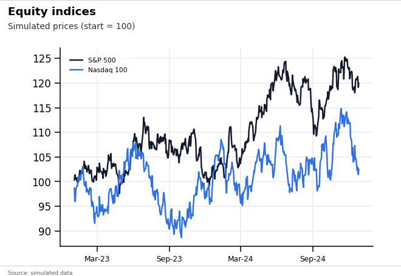
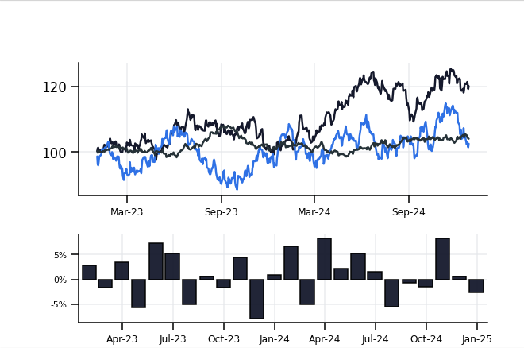

GraphMtplt: Getting Started¶
GraphMtplt is the main charting class of Helpers PS. It builds institutional-style Matplotlib charts (consistent fonts, colors, title / subtitle / source blocks, tags and reference lines) from a plain pandas.DataFrame, using a fluent, chainable API.
Every method returns the same GraphMtplt object, so a chart is normally written as one chained expression: create the object, add one or more charts, decorate, export.
The mental model¶
| Step | What you do | Main methods |
|---|---|---|
| 1. Data | Pass a DataFrame (or a list of them). The index is the x-axis and each column is a series. | hp.GraphMtplt(df) |
| 2. Canvas | Optional. Create the figure and its grid of subplots. If you skip it, a single-plot figure is created automatically by the first chart method. | .plot(), .axis(), .subplot_adjust() |
| 3. Chart | Draw one chart type on the active axis. | .graph_line(), .graph_bar(), .graph_pie(), .graph_box_whiskers(), .graph_dist() |
| 4. Decorate | Titles, legend, axes formatting, tags, dots, shaded regions, reference lines. | .add_title(), .add_legend(), .config_yaxis(), .tag(), .horizontal_lines() ... |
| 5. Export | Show it, get the Matplotlib figure, or save a PNG / an in-memory buffer. | .show(), .save(), .render() |
Your first chart¶
First create some sample data. Every example of this documentation can be copied and pasted after this block.
import numpy as np
import pandas as pd
import helpers_ps as hp
hp.set_graph_theme() # fonts and number formatting (see "Theme" below)
rng = np.random.default_rng(42)
dates = pd.bdate_range("2023-01-02", periods=520)
rets = rng.normal([0.0004, 0.0006, 0.0002], [0.009, 0.013, 0.004], size=(len(dates), 3))
prices = pd.DataFrame(
100 * np.exp(rets.cumsum(axis=0)),
index=dates,
columns=["SPX", "NDX", "AGG"],
)
SPX NDX AGG
2024-12-25 120.57 102.20 104.37
2024-12-26 119.14 101.43 104.09
2024-12-27 120.02 102.57 104.05
A line chart with a title, a subtitle, a source line and a legend:
g = (
hp.GraphMtplt(prices)
.graph_line(series=[
{"ticker": "SPX", "label": "S&P 500"},
{"ticker": "NDX", "label": "Nasdaq 100"},
])
.add_title("Equity indices")
.add_subtitle("Simulated prices (start = 100)")
.add_source("Source: simulated data")
.add_legend()
)

In a Jupyter notebook the figure is displayed automatically when the cell finishes. In a script, call .show() to get the matplotlib.figure.Figure or .save() / .render() to write a PNG (see Export).
Where do the series come from?
series is a list of one dictionary per column you want to draw. If you omit series, all columns are drawn with default colors. Keys such as label, color, axis_side or lw customize each series; they are documented in every chart page.
Chart types¶
| Method | Use it for | Data layout | Page |
|---|---|---|---|
graph_line() |
Time series, indices, yields, cumulative performance. | index = dates (or numbers / categories), columns = series | Line |
graph_bar() |
Simple, grouped or stacked bars: monthly returns, allocations, contributions. | index = x (dates or categories), columns = series | Bar |
graph_pie() |
Pie and donut: weights of a portfolio at one point in time. | index = categories, one column of values | Pie |
graph_box_whiskers() |
Historical distribution of each series (P/E, spreads, yields) with markers for the last observation. | each column = one box | Box & Whiskers |
graph_dist() |
Histogram with optional fitted / theoretical curves and highlighted references (VaR, last return, percentiles). | each column = one distribution | Distribution |
Building blocks¶
Besides the chart methods there are ready-made blocks that work on any chart type.
| Group | Methods | Page |
|---|---|---|
| Figure and layout | plot(), axis(), subplot_adjust(), add_title(), add_subtitle(), add_source(), add_plot_title() |
Plotting, Layout |
| Axes | x_axis={...} argument of every chart, config_yaxis(), get_axis() |
Axes |
| Annotations | tag(), dot(), shade_x(), shade_y() |
Annotations |
| Legends and reference lines | add_legend(), add_legend_point(), horizontal_lines(), vertical_lines(), horizontal_guides(), vertical_guides(), add_recessions() |
Legends and reference lines |
| Export and chaining | show(), save(), render(), pipe(), tap(), render_from_dict() |
Export |
Several DataFrames in one object¶
GraphMtplt accepts a single DataFrame or a list. Chart methods take df_index to pick which one to draw (default 0):
returns = prices.pct_change().dropna()
monthly = returns.resample("ME").apply(lambda r: (1 + r).prod() - 1)
g = (
hp.GraphMtplt([prices, monthly])
.plot(nrows=2, height_ratios=[3, 2], hspace=0.35)
.axis(0).graph_line(df_index=0)
.axis(1).graph_bar(
df_index=1,
series=[{"ticker": "SPX"}],
x_axis={"fmt": "%b-%y", "tick_step": 3},
)
.config_yaxis(fmt=".0%")
)

Series configuration: dictionaries or dataclasses¶
A series can be described with a plain dictionary (recommended, autocompletion-friendly in most editors thanks to TypedDict) or with the equivalent dataclass:
from helpers_ps.MtpltGraph.models import LineSeriesConfig
hp.GraphMtplt(prices).graph_line(series=[
{"ticker": "SPX", "color": "#12275A", "lw": 2}, # dictionary
LineSeriesConfig(ticker="NDX", color="#B7331F", lw=1.2), # dataclass
])
Invalid keys or values fail early with an explicit message (for example axis_side must be "left" or "right"). The available dataclasses are LineSeriesConfig, BarSeriesConfig, BoxSeriesConfig, DistSeriesConfig, DistCurveConfig and XAxisConfig, all importable from helpers_ps.MtpltGraph.models.
Theme¶
hp.set_graph_theme() configures Matplotlib globally (font family, base font size, title size / weight and locale-aware number formatting). Call it once at the top of a notebook or script.
hp.set_graph_theme(
font_family="Inter", # default; falls back to a system font if not installed
font_size=9,
title_size=12,
title_weight="bold",
use_locale=True, # decimal / thousand separators of the locale
locale_name="es_ES.UTF-8", # Windows: "Spanish_Spain.1252"
)
Font not found?
If you installed the Inter font after Matplotlib was imported, call hp.set_graph_theme(rebuild_font_cache=True) once. Use ignore_matplotlib_warnings=True to silence font warnings.
The default color palette is hp.PALETA_COLORES (a list of hex colors). Series without an explicit color take colors from it in order.
Typical errors¶
| Message | Cause | Fix |
|---|---|---|
Ticker 'X' was not found in the selected DataFrame. |
The ticker of a series is not a column. |
Check df.columns. |
Duplicated tickers are not allowed in 'series'. |
The same column appears twice in series. |
Use one entry per column. |
Multiple bar series require grouped=True or stacked=True. |
graph_bar(grouped=False) with several series. |
Remove grouped=False or use stacked=True. |
No existe grafico para agregar las recesiones / ...no tiene como eje fechas |
add_recessions() before a chart, or on a non-date axis. |
Draw a time-series chart first. |
| The title of a subplot disappears | add_title() clears the title of the active axis. |
Call add_title() before add_plot_title(). |
| Few labels on the x-axis of a bar chart | Default tick_step is 6. |
Use x_axis={"tick_step": 1}. See Axes. |